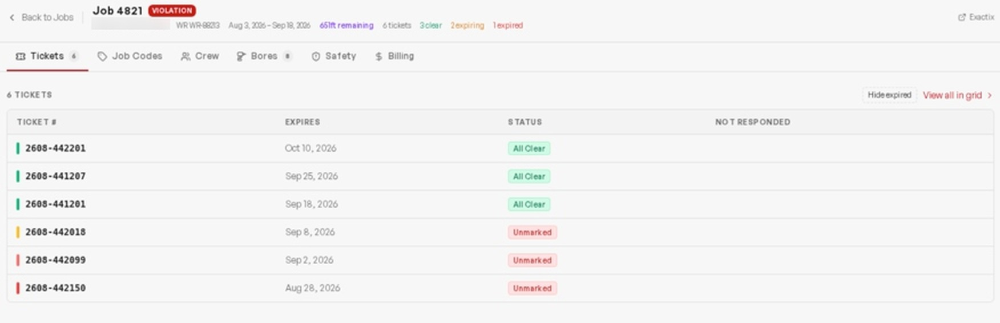
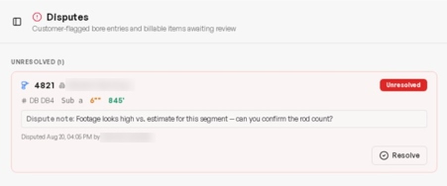
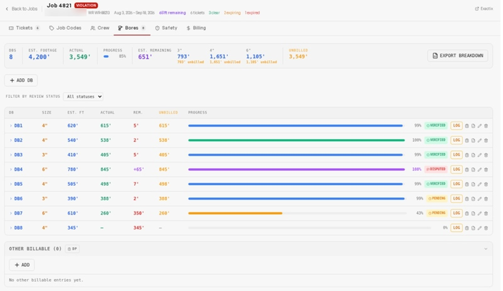

FiberTech's entire operation ran on interlinked spreadsheets that only a handful of people knew how to maintain. We replaced it with one system crews run from a phone in a trench.
FiberTech is an underground utility locating and directional boring contractor. Its crews run physically demanding, time-boxed jobs governed by call-before-you-dig tickets, utility clearance windows, and strict as-built documentation requirements. Before this engagement, that entire operation ran on a sprawling set of interlinked Excel workbooks. Not a simple log, but a genuinely complex manual system of sheets for tickets, bore logs, crew assignments, and billing that only a handful of people fully understood how to operate. We replaced it with a single field-to-office platform that crews run from a phone on a job site, that office staff can bill from directly, and that customers can log into to verify their own work. It has been live and growing since April 2026.
The spreadsheets were not careless work. They were careful work that had outgrown what a spreadsheet can safely hold. Four things were breaking.
Knowledge of how to keep the workbooks consistent lived in a few people's heads. That made the whole operation dependent on their availability and put a hard ceiling on how much volume the business could take on. Growth was limited not by demand or crew capacity, but by how much those few people could personally track by hand.
No single system tracked which utility tickets were clear, expiring, or expired across active jobs. That status lived in the discipline of whoever was maintaining the file. On this kind of work, a missed clearance window is not a reporting inconvenience, it is a crew standing on a job they cannot legally dig.
Bore logs are rod-by-rod depth and footage records, required for both billing and compliance. Crews captured them in the field on paper or ad hoc notes, and someone transcribed them into the spreadsheet system later. Slow, and a natural place for errors to enter the numbers the company bills from.
Customers had to call or email the office for job status. When a customer disagreed with billed footage, there was no formal resolution trail, just a phone conversation that nobody could reconstruct afterward.
Since April 2026 the system has grown from a blank scaffold into a multi-tenant operating system covering the full job lifecycle.
A Jobs and Tickets dashboard with utility-response tracking and color-coded clearance status: All Clear, Unmarked, Expiring, Expired. Route sheets handle daily crew assignments. A Merge Jobs tool safely reparents records across 15 related tables when duplicate jobs get created in the field, which is the kind of thing that happens constantly on real job sites and quietly corrupts a spreadsheet.

This is the core of the field workflow. Rod-by-rod bore logs, extended from an initial 500 foot cap to 1,000 feet to match real long-bore jobs. Pre-bore and post-bore checklists with tap-to-sign digital signatures. Category-tagged photo and video capture per bore. Print-formatted bore logs that match FiberTech's existing paper layout, deliberately, so crews were not asked to learn a new document and a new tool at the same time.
It also took a string of iOS-specific fixes to make the app reliable on the phones crews actually carry: scroll-lock freezes, auto-zoom on input focus, fullscreen video playback, and media payload sizes large enough to cause upload timeouts.
A Billing Run workflow with selectable and excludable line items, covering both bore entries and other billable charges like labor and equipment, with invoice numbers captured at billing time. A Crew Breakdown report gives daily and weekly totals, fleet averages, best-day figures, and crew comparisons. A production report with segment-level numbering and print and PDF output handles office and customer-facing documentation.
Phone and password authentication scoped so each customer sees only their own jobs. Customers review and either verify or dispute individual bore entries. Disputes run through a formal cycle: staff resolution requires a note and returns the item to Awaiting Review rather than silently closing it. Roll-up status badges let a customer see at a glance whether a whole bore is Verified, Pending, or Disputed. Admins get a disputes inbox and a View As impersonation mode for support.

Estimated Remaining footage, calculated as estimated minus actual across all bores on a job, surfaced consistently on the Bores tab, the Jobs list, and the job detail header. Pipe-size fields auto-fill from logged bore data so office staff stop re-keying numbers the system already holds.

This was not one monolithic release. It moved through phases that tracked FiberTech's own operational priorities.
Stood up the application and rebuilt the core schema around Jobs, Tickets, and Utility Responses. Imported the existing ticket backlog on day one and shipped the first Jobs and Tickets dashboard with clearance logic. The office got a live dashboard almost immediately rather than waiting for a big-bang launch.
This is where it became a real operating tool. Route sheets, authentication with role-based access for admin, supervisor, and crew, the Bores tab and bore-log form, print-formatted bore logs, and the first wave of mobile layout fixes as crews started using it on job sites instead of at a desk.
With the core workflow live, focus shifted to reliability where it mattered most: the pre-bore and post-bore checklist and signature flow, labor and equipment billing capture, and a series of iOS fixes driven by real crew usage rather than by spec. Office reporting caught up in the same window with the Crew Breakdown and production reports, now that there was clean field data to report on.
The customer portal end to end, the safe duplicate-job merge tool, and Estimated Remaining footage across the Bores, Jobs, and job header views. This phase was driven heavily by direct field feedback, including a request from a crew lead that the job detail header showed nothing useful unless someone manually typed it into Notes. That shipped as a fix the same day it was raised.
That cadence is characteristic of how this engagement runs. Fixes and features trace back to a specific field complaint, a specific screenshot, or a specific data question. They get verified against production data and shipped. They are not built speculatively ahead of demonstrated need.
The production system now runs:
Every foot of bore, every utility response, and every billing line now lives in one auditable system instead of a web of manually maintained workbooks. That is what makes the verification and dispute workflow possible at all, and what makes estimate-versus-actual footage tracking a query rather than an afternoon of cross-checking.
Auto-filled pipe sizes and Estimated Remaining calculations pull from the same logged bore data used for billing, which removes a manual re-keying step that was a natural source of billing errors. Closing out a billing run went from roughly a full day of cross-checking spreadsheets to under an hour.
The portal turned "call the office to ask about a job" into self-service review, cutting routine status-check calls into the office by roughly 70 to 80 percent. More importantly, disputes now have a real resolution history instead of one-off phone conversations that left no record.
Bore logs that used to take a day or more to get from a crew's paper notes into the office spreadsheet now land in the system the same shift they are captured.
Operations that used to require a specific spreadsheet owner to execute, including running billing, reconciling crew production, and merging duplicate jobs, can now be run by any authorized staff member. That removes the bottleneck that capped how much volume the business could take on, which is the result that actually changes what the company is worth.
The workflow improvements are real, but the durable win is different. FiberTech's operation is no longer a set of files and a few people who know how to run them. It is a schema, a role model, an audit trail, and a customer-facing record of work performed. Any authorized person can run the business from it, and every foot billed can be traced to the crew, the bore, the photo, and the customer who verified it.
Joe Patalano co-founded Stature in 2006 and has spent 30 or more years building and operating enterprise software organizations. He approaches every engagement as an operator first, which is why this one was scoped around removing a growth ceiling rather than around replacing a spreadsheet.